Albert Einstein
Cajamarca es uno de los veinticuatro departamentos que, junto con la Provincia Constitucional del Callao, forman la Republica del Perú. Su capital y ciudad más poblada es la homónima Cajamarca. Está ubicado al noroeste del país, limitando al norte con Ecuador, al este con Amazonas, al sur con La Libertad y al oeste con Lambayeque y Piura. Con 1 387 809 habs. en 2007 es el cuarto departamento más poblado por detrás de Lima, Piura y La Libertad y con 41,7 hab/km² es el sexto más densamente poblado, por detrás de Lima, Lambayeque, La Libertad, Piura y Tumbes. Fue fundado el 11 de febrero de 1855.
La actividad agraria no solo es importante porque tiene como una de sus metas satisfacer la demanda de alimentos de la población, sino también, porque contribuye a modificar la estructura de los mercados a través de producción alternativa, materias primas y residuos que pueden ser utilizados por la industria.
En esta actividad el hombre utiliza dos recursos naturales fundamentales: los suelos y el agua, y otros insumos con semillas, fertilizantes, insecticidas, etc.
La mayoría de sus habitantes no son naturales de la selva, en su gran parte son de la zona sierra. Su producción agrícola destaca por la siembra de papa, trigo, cebada, maíz, oca, olluco, mashua, arracacha, quinua, cañihua, arroz, café, yuca, camote, caña de azúcar (de la que se obtiene Ron y Aguardiente, chirimoya (siendo primer productor nacional de la misma) y algodón. Ya que parte de sus pobladores son agricultores y la otra parte son comerciantes.
* La papa. En los pisos medios o Región Quechua se cultiva la papa, que es la base de la economía andina y, también, elemento básico de la alimentación de la población de esta región. Hay una gran variedad de papas que difieren en el color, la forma y el tamaño de los tubérculos. De la papa se elabora el Chuño y la papaseca.
* Otros Cultivos. Otros productos agrícolas de la Región Quechua son; las habas, las arvejas y una gran variedad de hortalizas. En los pisos más altos de la Región Suni se cultivan: La cebada, la oca, la mashua, el olluco, la quinua, la kiwicha, la cañiwa, etc. Estos tres últimos cereales son los más nutritivos del Mundo por la cantidad de proteínas que contienen. Su consumo desde temprana edad es considerado como una vacuna contra la desnutrición o una inmunización contra el hambre.
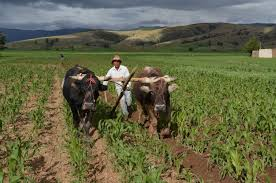
Agricultor Labrando la tierra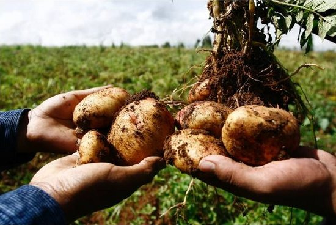
Cultivo de papaLa ganadería consiste en la crianza, selección y reproducción de algunos animales domésticos, como vacunos, ovinos, caprinos, porcinos, etc. Es la primera región productora de ganado vacuno con más de 600.000 cabezas de esta especie. La estación piscícola de Namora produce alevinos de truchas y pejerreyes. Jaén es uno de los mayores productores de arroz y frutales. En el valle de Condebamba se siembre caña de azúcar de la que se obtiene aguardiente y chancaca. Con el objeto de aprovechar sus productos en la alimentación y en las actividades artesanales e industriales.
En esta actividad productiva se utilizan los suelos, los pastos naturales, diferentes productos agrícolas (pastos cultivables, granos, chala), como alimentos y otros insumos.
En esta región predomina la crianza de:
* Ganadería de Vacunos. Esta ganadería es extensiva, conformada por vacunos criollos o "chuscos", descendientes de los bovinos que trajeron los españoles y que degeneraron, con el correr de los años, en especies de baja calidad genética, con baja producción y productividad.
* Ganadería de Ovinos. Esta ganadería la podemos encontrar de dos tipos, extensiva e intensiva, la crianza se realiza en las altas mesetas andinas o Región Puna. Allí crece el ichu, gramínea que le sirve de alimento.
La ganadería extensiva está conformada por especies de baja calidad genética, descendientes de los primitivos Merinos de Castilla que fueron traídos por los españoles. Tienen bajo rendimiento en carne y lana, es decir, baja producción, pues tienen sólo 15 kilos de peso, en promedio. La ganadería intensiva está conformada por especies seleccionadas, de alta productividad, tanto en carne como en lana, y está conducida bajo una adecuada dirección técnica y científica.
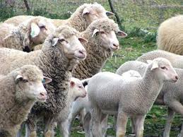
Ganado ovino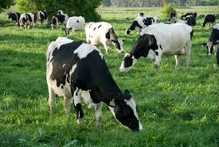
Ganado vacunoEn esta región destacan los lácteros de producción de leche para producir quesos y mantequilla.
En esta actividad productiva se utilizan los suelos, los pastos naturales, diferentes productos agrícolas (pastos cultivables, granos, chala), como alimentos y otros insumos.
* Leche. Es un líquido blanquecino y opaco producido por la secreción de las glándulas mamarias de las hembras de los mamíferos (incluidos los monotremas). Esta capacidad secretora es una de las características que definen a los mamíferos.
* Queso. Es un alimento sólido elaborado a partir de la leche cuajada de vaca, cabra, oveja, búfala, camella u otros mamíferos. Es la conserva ideal pues muy difícilmente se estropea con el transcurso del tiempo ya que al secarse mejoran sus cualidades en relación al peso.
* Mantequilla.Es la emulsión de agua en grasa obtenida como resultado del desuero, lavado y amasado de los conglomerados de glóbulos grasos, que se forman por el batido de la crema de leche y es apta para consumo, con o sin maduración biológica producida por bacterias específicas.
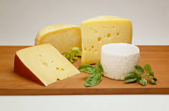
Queso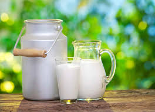
Leche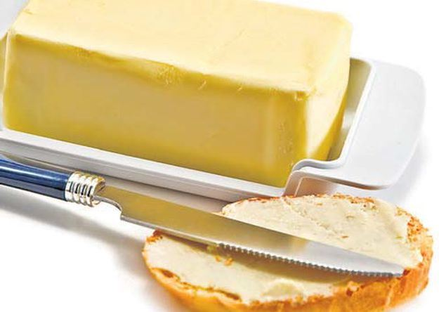
mantequillaJaén es una provincia que aún forma parte del departamento de Cajamarca, en el nor oriente del Perú y que espera en un futuro no muy lejano convertirse en una región o departamento. Tiene una ubicación estratégica e historia, su producción y dinamismo económico está basada en la agricultura, el comercio, la exportación de cafés especiales, entre otros.
La provincia de Jaén además de ser principal productor de aceite de oliva, también tiene otras oportunidades en el mundo agrícola.
La Diputación Provincial de Jaén, en el marco de este sector, tiene entre sus objetivos el apoyo a cultivos alternativos al olivar, apostar por cultivos que creen un mínimo de jornales por hectárea y que además potencien el aprovechamiento de las tierras de riego de las que se disponen y así favorecer la generación de empleo a través de las mismas. Otra apuesta de la Diputación es la agricultura ecológica. En ambos sentidos se vienen desarrollando diferentes actuaciones, además de la labor promocional de los productos de la provincia a través de la estrategia Degusta Jaén, “con la que ser apuesta por consumir productos de Jaén que son sinónimo de calidad, de conocimiento del agricultor y de la empresa que los genera.
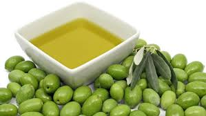
aceite de olivaJaén es una provincia eminentemente ganadera y más concretamente de ganadería extensiva ligada a los grandes Espacios Naturales Protegidos; o a cualquier otra figura de protección de la naturaleza como puede ser la Red Natura 2000. La ganadería extensiva en la provincia de Jaén contribuye al mantenimiento del patrimonio cultural, etnográfico y económico; con predominio de elementos diferenciadores con respecto a otras modalidades de ganadería extensiva andaluza, española y comunitaria, cómo pueden ser la trashumancia o el fuerte desarrollo de la ganadería ecológica.
Con un universo de 451 empresas manufactureras, de las cuales 55 constituyen sucursales de empresas de fuera de la región y empleando más del 12% de la población económicamente activa de la ciudad, la actividad industrial muestra presencia en la estructura económica de la ciudad, pero poca generación de valor agregado, tratándose de empresas generalmente pequeñas y microempresas.
La Provincia de San Miguel es una de las trece provincias que conforman el Departamento de Cajamarca, bajo la administración del Gobierno Regional de Cajamarca, en el Perú. Limita por el norte con la provincia de Santa Cruz y la Provincia de Hualgayoc; por el este con la Provincia de San Pablo; por el sur con la Provincia de Contumazá; y, por el oeste con el Departamento de Lambayeque y el Departamento de La Libertad
El pueblo de San Miguel se halla envuelto por un majestuoso paisaje, pletórico en formas y matices.
San Miguel de Pallaques es la ciudad capital del distrito y provincia del mismo nombre, dista a 40 kilómetros de la provincia de San Pablo y 105.5 Km. de Cajamarca.
La población sanmiguelina es acogedora y muy hospitalaria, la ciudad andina rodeada de hermosos paisajes, mantiene aún una apacible apariencia, que es transformada durante el mes de septiembre las celebraciones de su venerada imagen, "San Miguel Arcángel", y su día central es el 29.
El trazo de la Plaza Mayor de la ciudad de San Miguel, se remonta a la época colonial, respetando el esquema fundacional de los españoles. En los contornos de la Plaza se ubican las siguientes Institucion es: Iglesia Matriz, Municipalidad provincial, Gobernación, Comisaría Sectorial de la PNP y el Juzgado Mixto provincial. La Plaza de Armas luce en su parte central sobre la pileta a su venerada imagen: "Arcángel San Miguel”.
Bello puente construido a fines del siglo XIX. Ubicado a dos kilómetros de la ciudad de San Miguel. Durante el mandato del alcalde Jacinto Barrantes se construyó el puente de piedra sobre el río San Miguel. En una zona rocosa y accidentada, fue levantado el puente con ladrillo de calicanto. En uno de los costados del puente puede leerse la inscripción: “Tributo de los hijos de San Miguel 1882”. Su fortaleza es tal que hasta hoy es utilizado para el transporte vehicular, por este puente se va hacia :La Villa Turística de Jangalá y allí conocer sus Ventanillas, el Distrito de Llapa, San Silvestre de Cochán y también para ir a la ciudad de Cajamarca; asimismo sirve para el desplazamiento de las personas.
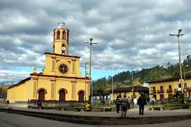
Plaza Mayor de San Miguel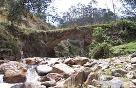
Puente CalicantoLa Provincia de Celendín es una de las trece que conforman el Departamento de Cajamarca, bajo la administración del Gobierno Regional de Cajamarca, en el Perú.
Limita al norte con la provincia de Chota, al este con la Región Amazonas, al sur con las provincias de San Marcos y Cajamarca, y al occidente con la provincia de Hualgayoc.
Es una de las actividades más importantes que realizan los pobladores celendinos siendo su comercio no significativo, destinándose dichos productos al consumo directo.
Se estima que las tierras agrícolas suman un total de 45,509 hectáreas, en los que se cultiva: el maíz, el trigo, la cebada, la papa, la oca, la arveja, también en algunas zonas se cultiva el café, la coca, el cacao, árboles frutales.
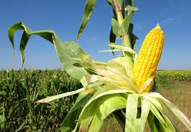
Cultivo de maiz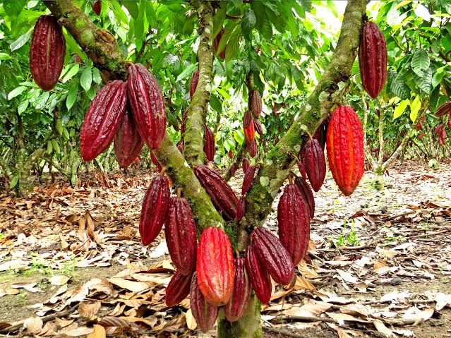
Cultivo de cacaoDando prioridad a la crianza de ganado vacuno (para producción lechera en su gran mayoría), el ganado vacuno que se cria en grana mayoría es el criollo, pero también razas como Brow Swiss y Holstein.
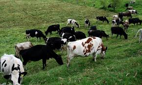
Ganaderia en CelendinLa confección del sombrero es predominante y por este hecho, es fuente de ingresos para algunos pobladores, son las mujer shilicas las confeccionan estos sombreros utilizando la paja toquilla traida desde el Departamento de San Martín (generalmente de Rioja). La venta de los sombreros es realizado en la plazuela Juan Basillo Cortegana (conocida como la Alamedad), todos los domingos.
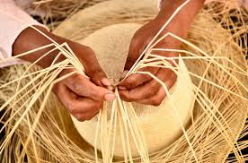
Confeccion de sombreros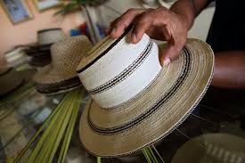
Sombrero terminadoLa Provincia de San Marcos es una de las trece que conforman el Departamento de Cajamarca, bajo la administración del Gobierno Regional de Cajamarca, en el Perú. Limita por el norte con la provincia de Celendín; por el este con el Departamento de La Libertad; por el sur con la provincia de Cajabamba; y, por el oeste con la provincia de Cajamarca.
The Paris area is one of the largest population centers in Europe, with more than 12 million inhabitants.
La Provincia de San Marcos, pertenece al Departamento de Cajamarca y está ubicada al sur-este del mismo. Abarca una superficie de 1 362,32 km2 y está habitada por unas 50 275 personas según el censo de 1993; esto representa el 4% de la población total del departamento, por otro lado, se sabe, que la mayor parte de pobladores pertenecen a la zona rural (41.929; lo que constituye un 83,39% de la población total).
Los platos típicos en San Marcos se cultivan gran variedad de productos alimenticios, los mismos que forman parte de variados y nutritivos platos típicos, aunque en muchos de los casos no son propios, poseen cierta peculiaridad que los hacen distinguir.
* Cuy con papa. Es el más representativo de la provincia y se sirve en ocasiones especiales. Está preparado a base de papa guisada o aderezada y cuy frito, acompañado de arroz de trigo o trigo pelado cocinado.
* El puchero. EEs preparado con repollo, granos de arrozcarne de cerdo o tocino. Es un platillo característico de las fiestas rurales y por lo general se lo sirve acompañado yuca y camote sancochado además de la famosa cancha de maíz.
* CEl potaje de minga. Es un plato preparado con mote aderezado, acompañado de sopa de chochoca espesa y los conocidos discos o cachangas. Este plato también se suele servir Cuy con papa en los velorios.
* El zango de trigo. El trigo tostado y molido va a acompañar un aderezo y de esta manera dar lugar a un delicioso plato que se acostumbra mucho para los trabajos comunales en el Distrito de Gregorio Pita - Paucamarca.
* El ruche. Es un potaje muy nutritivo preparado con trigo al que previamente se lo ruche o quita la cáscara; también lleva menestra (por lo general arveja) y algún tipo de carne.
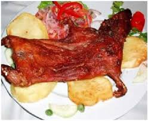
Cuy con papas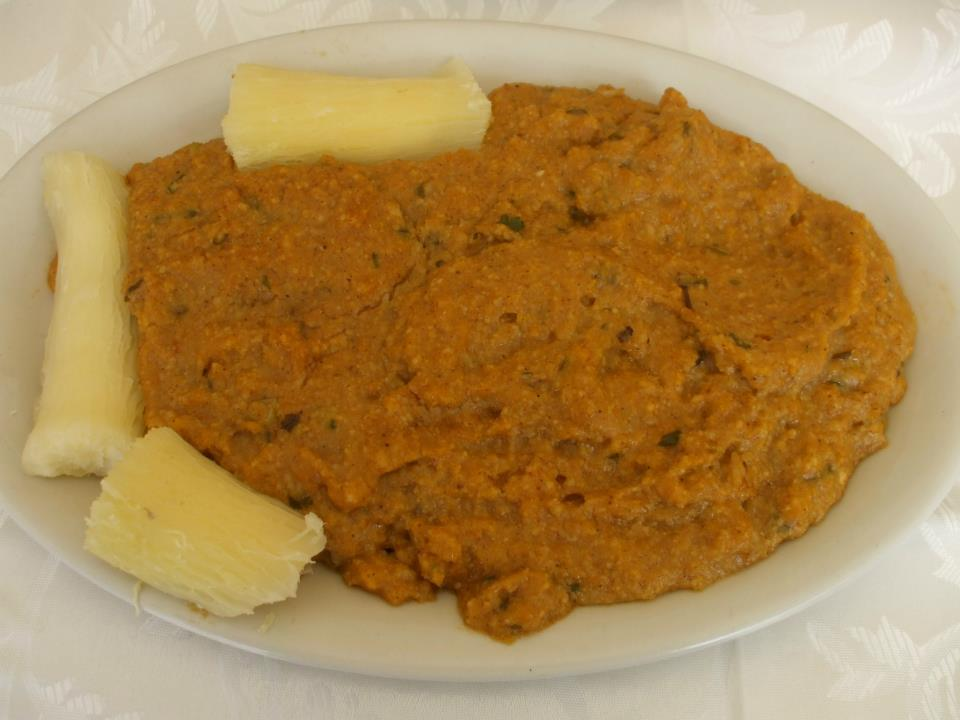
Sango de trigoLa Provincia de Hualgayoc es una de las trece que conforman el departamento de Cajamarca, bajo la administración del Gobierno Regional de Cajamarca. Limita por el norte con la provincia de Chota; por el este con la provincia de Celendín; por el sur con la provincia de Cajamarca y la provincia de San Pablo; y, por el oeste con la provincia de San Miguel y la provincia de Santa Cruz.
Es un distrito minero que el sabio Antonio Raimondi describió como «Techo de Paja, Cerros de Plata y Corazón de Oro»,en su visita efectuada en 1867.
El distrito tiene una extensión de 226,17 km² y una población aproximada de 20 129 habitantes, de la cual el 90% es rural.Se ubica a unos 88 km al norte de Cajamarca y a 29 km al oeste de Bambamarca, a 3 515 m.s.n.m.
Mi nombre es Ivan Aliaga Alvarez estudiante de la facualtad de Ingenieria de sistemas de la UNC y esta pagina es desarrollada con fines academicos en el curso de ingenieria web en el año 2017.
Para mayor informacion ubicanos en el jr. Revilla Perez #579